第12章：利用Matplotlib、Pandas和Seaborn進行資料視覺化
Contents
第12章：利用Matplotlib、Pandas和Seaborn進行資料視覺化¶
12.1 Matplotlib入門¶
%matplotlib inline
12.2 Matplotlib的物件導向指南¶
import matplotlib.pyplot as plt
x = [-3, 5, 7]
y = [10, 2, 5]
fig = plt.figure(figsize=(15,3))
plt.plot(x, y)
plt.xlim(0, 10)
plt.ylim(-3, 8)
plt.xlabel('X Axis')
plt.ylabel('Y axis')
plt.title('Line Plot')
plt.suptitle('Figure Title', size=20, y=1.03)
Text(0.5, 1.03, 'Figure Title')
from matplotlib.figure import Figure
from matplotlib.backends.backend_agg import FigureCanvasAgg as FigureCanvas
from IPython.core.display import display
fig = Figure(figsize=(15, 3))
FigureCanvas(fig)
ax = fig.add_subplot(1,1,1)
ax.plot(x, y)
ax.set_xlim(0, 10)
ax.set_ylim(-3, 8)
ax.set_xlabel('X axis')
ax.set_ylabel('Y axis')
ax.set_title('Line Plot')
fig.suptitle('Figure Title', size=20, y=1.03)
display(fig)

fig, ax = plt.subplots(figsize=(15,3))
ax.plot(x, y)
ax.set(xlim=(0, 10), ylim=(-3, 8),
xlabel='X axis', ylabel='Y axis',
title='Line Plot')
fig.suptitle('Figure Title', size=20, y=1.03)
Text(0.5, 1.03, 'Figure Title')
import matplotlib.pyplot as plt
fig, ax = plt.subplots(nrows=1, ncols=1)
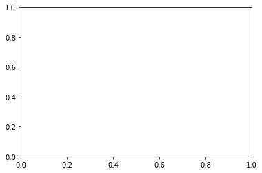
plot_objects = plt.subplots(nrows=1, ncols=1)
type(plot_objects)
tuple

fig = plot_objects[0]
ax = plot_objects[1]
figs, axs = plt.subplots(2, 4)
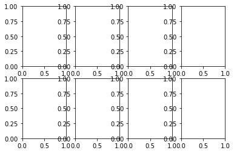
axs
array([[<matplotlib.axes._subplots.AxesSubplot object at 0x000001B633E97370>,
<matplotlib.axes._subplots.AxesSubplot object at 0x000001B633FBC520>,
<matplotlib.axes._subplots.AxesSubplot object at 0x000001B633FE8940>,
<matplotlib.axes._subplots.AxesSubplot object at 0x000001B634014D60>],
[<matplotlib.axes._subplots.AxesSubplot object at 0x000001B63404E1C0>,
<matplotlib.axes._subplots.AxesSubplot object at 0x000001B6340796D0>,
<matplotlib.axes._subplots.AxesSubplot object at 0x000001B634098B80>,
<matplotlib.axes._subplots.AxesSubplot object at 0x000001B6340D1040>]],
dtype=object)
type(fig)
matplotlib.figure.Figure
type(ax)
matplotlib.axes._subplots.AxesSubplot
fig.get_size_inches()
array([6., 4.])
fig.set_size_inches(14, 4)
fig
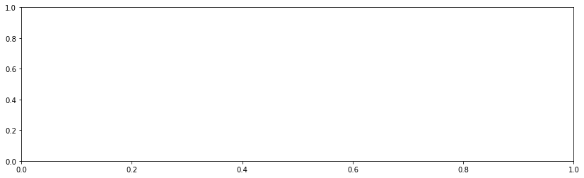
fig.axes
[<matplotlib.axes._subplots.AxesSubplot at 0x1b633f4e640>]
ax.xaxis == ax.get_xaxis()
True
ax.yaxis == ax.get_yaxis()
True
fig.axes[0] is ax
True
fig.set_facecolor('.7')
ax.set_facecolor('.5')
fig
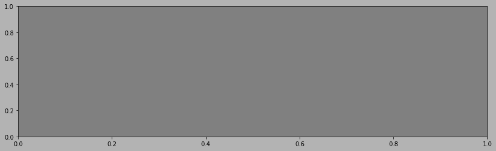
ax_children = ax.get_children()
ax_children
[<matplotlib.spines.Spine at 0x1b633f4ea30>,
<matplotlib.spines.Spine at 0x1b633f4ecd0>,
<matplotlib.spines.Spine at 0x1b633f4eb80>,
<matplotlib.spines.Spine at 0x1b633f4ef10>,
<matplotlib.axis.XAxis at 0x1b633f4e820>,
<matplotlib.axis.YAxis at 0x1b633ed90a0>,
Text(0.5, 1.0, ''),
Text(0.0, 1.0, ''),
Text(1.0, 1.0, ''),
<matplotlib.patches.Rectangle at 0x1b633eb6340>]
spines = ax.spines
spines
OrderedDict([('left', <matplotlib.spines.Spine at 0x1b633f4ea30>),
('right', <matplotlib.spines.Spine at 0x1b633f4ecd0>),
('bottom', <matplotlib.spines.Spine at 0x1b633f4eb80>),
('top', <matplotlib.spines.Spine at 0x1b633f4ef10>)])
spine_left = spines['left']
spine_left.set_position(('outward', -100))
spine_left.set_linewidth(5)
spine_bottom = spines['bottom']
spine_bottom.set_visible(False)
fig
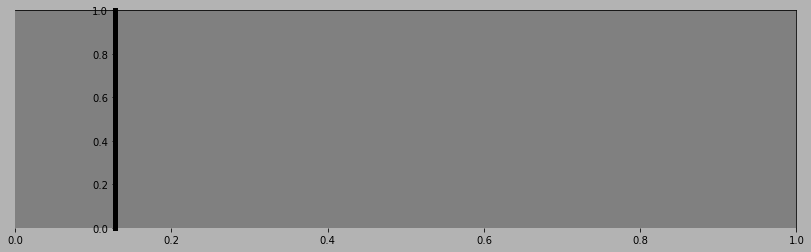
ax.xaxis.grid(True, which='major', linewidth=2, color='black', linestyle='--')
ax.xaxis.set_ticks([.2, .4, .55, .93])
ax.xaxis.set_label_text('X Axis', family='Verdana', fontsize=15)
ax.set_ylabel('Y Axis', family='Gotham', fontsize=20)
ax.set_yticks([.1, .9])
ax.set_yticklabels(['point 1', 'point 9'], rotation=45)
fig
findfont: Font family ['Gotham'] not found. Falling back to DejaVu Sans.
ax.xaxis.properties()
{'agg_filter': None,
'alpha': None,
'animated': False,
'children': [Text(0.5, 22.200000000000003, 'X Axis'),
Text(1, 23.200000000000003, ''),
<matplotlib.axis.XTick at 0x1b633f5b1f0>,
<matplotlib.axis.XTick at 0x1b633f5b250>,
<matplotlib.axis.XTick at 0x1b633f606a0>,
<matplotlib.axis.XTick at 0x1b633f6d790>],
'clip_box': <matplotlib.transforms.TransformedBbox at 0x1b633eb65e0>,
'clip_on': True,
'clip_path': None,
'contains': None,
'data_interval': array([ inf, -inf]),
'figure': <Figure size 1008x288 with 1 Axes>,
'gid': None,
'gridlines': <a list of 4 Line2D gridline objects>,
'in_layout': True,
'inverted': False,
'label': Text(0.5, 22.200000000000003, 'X Axis'),
'label_position': 'bottom',
'label_text': 'X Axis',
'major_formatter': <matplotlib.ticker.ScalarFormatter at 0x1b633f44640>,
'major_locator': <matplotlib.ticker.FixedLocator at 0x1b634180850>,
'major_ticks': [<matplotlib.axis.XTick at 0x1b633f5b1f0>,
<matplotlib.axis.XTick at 0x1b633f5b250>,
<matplotlib.axis.XTick at 0x1b633f606a0>,
<matplotlib.axis.XTick at 0x1b633f6d790>],
'majorticklabels': <a list of 4 Text major ticklabel objects>,
'majorticklines': <a list of 8 Line2D ticklines objects>,
'majorticklocs': array([0.2 , 0.4 , 0.55, 0.93]),
'minor_formatter': <matplotlib.ticker.NullFormatter at 0x1b633f4ec70>,
'minor_locator': <matplotlib.ticker.NullLocator at 0x1b633ed9df0>,
'minor_ticks': [],
'minorticklabels': <a list of 0 Text minor ticklabel objects>,
'minorticklines': <a list of 0 Line2D ticklines objects>,
'minorticklocs': [],
'minpos': inf,
'offset_text': Text(1, 23.200000000000003, ''),
'path_effects': [],
'picker': None,
'pickradius': 15,
'rasterized': None,
'remove_overlapping_locs': True,
'scale': 'linear',
'sketch_params': None,
'smart_bounds': False,
'snap': None,
'tick_padding': 3.5,
'tick_space': 26,
'ticklabels': <a list of 4 Text major ticklabel objects>,
'ticklines': <a list of 8 Line2D ticklines objects>,
'ticklocs': array([0.2 , 0.4 , 0.55, 0.93]),
'ticks_direction': array(['out', 'out', 'out', 'out'], dtype='<U3'),
'ticks_position': 'bottom',
'transform': <matplotlib.transforms.IdentityTransform at 0x1b633f789a0>,
'transformed_clip_path_and_affine': (None, None),
'units': None,
'url': None,
'view_interval': array([0., 1.]),
'visible': True,
'zorder': 1.5}
12.3 用Matplotlib視覺化資料¶
import pandas as pd
import numpy as np
pd.set_option('max_columns', 6, 'max_rows', 10, 'max_colwidth', 12)
alta = pd.read_csv('data/alta-noaa-1980-2019.csv')
alta
| STATION | NAME | LATITUDE | ... | WT05 | WT06 | WT11 | |
|---|---|---|---|---|---|---|---|
| 0 | USC00420072 | ALTA, UT US | 40.5905 | ... | NaN | NaN | NaN |
| 1 | USC00420072 | ALTA, UT US | 40.5905 | ... | NaN | NaN | NaN |
| 2 | USC00420072 | ALTA, UT US | 40.5905 | ... | NaN | NaN | NaN |
| 3 | USC00420072 | ALTA, UT US | 40.5905 | ... | NaN | NaN | NaN |
| 4 | USC00420072 | ALTA, UT US | 40.5905 | ... | NaN | NaN | NaN |
| ... | ... | ... | ... | ... | ... | ... | ... |
| 14155 | USC00420072 | ALTA, UT US | 40.5905 | ... | NaN | NaN | NaN |
| 14156 | USC00420072 | ALTA, UT US | 40.5905 | ... | NaN | NaN | NaN |
| 14157 | USC00420072 | ALTA, UT US | 40.5905 | ... | NaN | NaN | NaN |
| 14158 | USC00420072 | ALTA, UT US | 40.5905 | ... | NaN | NaN | NaN |
| 14159 | USC00420072 | ALTA, UT US | 40.5905 | ... | NaN | NaN | NaN |
14160 rows × 22 columns
data = (alta.assign(DATE=pd.to_datetime(alta.DATE))
.set_index('DATE')
.loc['2018-09':'2019-08']
.SNWD)
data
DATE
2018-09-01 0.0
2018-09-02 0.0
2018-09-03 0.0
2018-09-04 0.0
2018-09-05 0.0
...
2019-08-27 0.0
2019-08-28 0.0
2019-08-29 0.0
2019-08-30 0.0
2019-08-31 0.0
Name: SNWD, Length: 364, dtype: float64
blue = '#99ddee'
white = '#ffffff'
fig, ax = plt.subplots(figsize=(12,4), linewidth=5, facecolor=blue)
ax.set_facecolor(blue)
ax.spines['top'].set_visible(False)
ax.spines['right'].set_visible(False)
ax.spines['bottom'].set_visible(False)
ax.spines['left'].set_visible(False)
ax.tick_params(axis='x', colors=white)
ax.tick_params(axis='y', colors=white)
ax.set_ylabel('Snow Depth (in)', color=white)
ax.set_title('2018-2019', color=white, fontweight='bold')
ax.fill_between(data.index, data, color=white)
<matplotlib.collections.PolyCollection at 0x1b63603f100>
import matplotlib.dates as mdt
blue = '#99ddee'
white = '#ffffff'
def plot_year(ax, data, years):
ax.set_facecolor(blue)
ax.spines['top'].set_visible(False)
ax.spines['right'].set_visible(False)
ax.spines['bottom'].set_visible(False)
ax.spines['left'].set_visible(False)
ax.tick_params(axis='x', colors=white)
ax.tick_params(axis='y', colors=white)
ax.set_ylabel('Snow Depth (in)', color=white)
ax.set_title(years, color=white, fontweight='bold')
ax.fill_between(data.index, data, color=white)
years = range(2009, 2019)
fig, axs = plt.subplots(ncols=2, nrows=int(len(years)/2),
figsize=(16, 10), linewidth=5, facecolor=blue)
axs = axs.flatten()
max_val = None
max_data = None
max_ax = None
for i,y in enumerate(years):
ax = axs[i]
data = (alta
.assign(DATE=pd.to_datetime(alta.DATE))
.set_index('DATE')
.loc[f'{y}-09':f'{y+1}-08']
.SNWD
)
if max_val is None or max_val < data.max():
max_val = data.max()
max_data = data
max_ax = ax
ax.set_ylim(0, 180)
years = f'{y}-{y+1}'
plot_year(ax, data, years)
max_ax.annotate(f'Max Snow {max_val}',
xy=(mdt.date2num(max_data.idxmax()), max_val),
color=white)
fig.suptitle('Alta Snowfall', color=white, fontweight='bold')
fig.tight_layout()
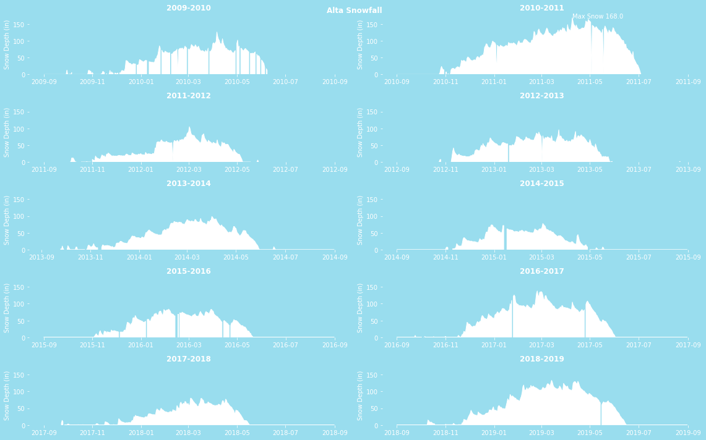
years = range(2009, 2019)
fig, axs = plt.subplots(ncols=2, nrows=int(len(years)/2),
figsize=(16, 10), linewidth=5, facecolor=blue)
axs = axs.flatten()
max_val = None
max_data = None
max_ax = None
for i,y in enumerate(years):
ax = axs[i]
data = (alta.assign(DATE=pd.to_datetime(alta.DATE))
.set_index('DATE')
.loc[f'{y}-09':f'{y+1}-08']
.SNWD
.interpolate()
)
if max_val is None or max_val < data.max():
max_val = data.max()
max_data = data
max_ax = ax
ax.set_ylim(0, 180)
years = f'{y}-{y+1}'
plot_year(ax, data, years)
max_ax.annotate(f'Max Snow {max_val}',
xy=(mdt.date2num(max_data.idxmax()), max_val),
color=white)
plt.tight_layout()
fig.suptitle('Alta Snowfall', color=white, fontweight='bold')
fig.tight_layout(rect=[0, 0.03, 1, 0.95])
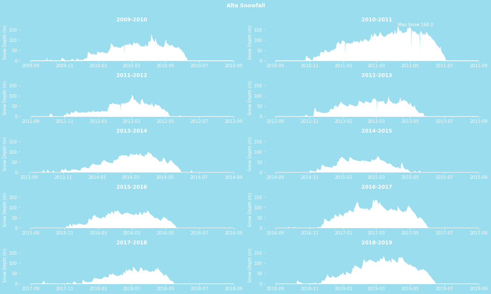
(alta
.assign(DATE=pd.to_datetime(alta.DATE))
.set_index('DATE')
.SNWD
.to_frame()
.assign(next=lambda df_:df_.SNWD.shift(-1),
snwd_diff=lambda df_:df_.next-df_.SNWD)
.pipe(lambda df_: df_[df_.snwd_diff.abs() > 50])
)
| SNWD | next | snwd_diff | |
|---|---|---|---|
| DATE | |||
| 1989-11-27 | 60.0 | 0.0 | -60.0 |
| 2007-02-28 | 87.0 | 9.0 | -78.0 |
| 2008-05-22 | 62.0 | 0.0 | -62.0 |
| 2008-05-23 | 0.0 | 66.0 | 66.0 |
| 2009-01-16 | 76.0 | 0.0 | -76.0 |
| ... | ... | ... | ... |
| 2011-05-18 | 0.0 | 136.0 | 136.0 |
| 2012-02-09 | 58.0 | 0.0 | -58.0 |
| 2012-02-10 | 0.0 | 56.0 | 56.0 |
| 2013-03-01 | 75.0 | 0.0 | -75.0 |
| 2013-03-02 | 0.0 | 78.0 | 78.0 |
21 rows × 3 columns
def fix_gaps(ser, threshold=50):
'Replace values where the shift is > threshold with nan'
mask = (ser
.to_frame()
.assign(next=lambda df_:df_.SNWD.shift(-1),
snwd_diff=lambda df_:df_.next-df_.SNWD)
.pipe(lambda df_: df_.snwd_diff.abs() > threshold)
)
return ser.where(~mask, np.nan)
years = range(2009, 2019)
fig, axs = plt.subplots(ncols=2, nrows=int(len(years)/2),
figsize=(16, 10), linewidth=5, facecolor=blue)
axs = axs.flatten()
max_val = None
max_data = None
max_ax = None
for i,y in enumerate(years):
ax = axs[i]
data = (alta.assign(DATE=pd.to_datetime(alta.DATE))
.set_index('DATE')
.loc[f'{y}-09':f'{y+1}-08']
.SNWD
.pipe(fix_gaps)
.interpolate()
)
if max_val is None or max_val < data.max():
max_val = data.max()
max_data = data
max_ax = ax
ax.set_ylim(0, 180)
years = f'{y}-{y+1}'
plot_year(ax, data, years)
max_ax.annotate(f'Max Snow {max_val}',
xy=(mdt.date2num(max_data.idxmax()), max_val),
color=white)
fig.suptitle('Alta Snowfall', color=white, fontweight='bold')
fig.tight_layout(rect=[0, 0.03, 1, 0.95])
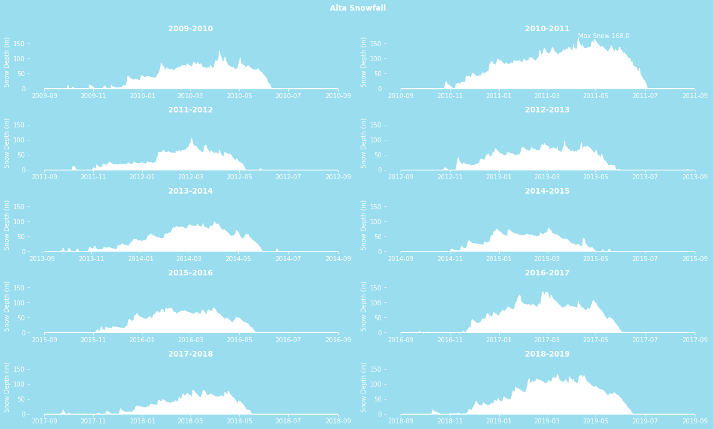
小編補充¶
s = pd.Series(range(5))
s
0 0
1 1
2 2
3 3
4 4
dtype: int64
s.where(s>0)
0 NaN
1 1.0
2 2.0
3 3.0
4 4.0
dtype: float64
s = pd.Series(range(5))
t = s>0
t
0 False
1 True
2 True
3 True
4 True
dtype: bool
s.where(t)
0 NaN
1 1.0
2 2.0
3 3.0
4 4.0
dtype: float64
12.4 使用Pandas繪製基本圖形¶
df = pd.DataFrame(index=['Atiya', 'Abbas', 'Cornelia', 'Stephanie', 'Monte'],
data={'Apples':[20, 10, 40, 20, 50],
'Oranges':[35, 40, 25, 19, 33]})
df
| Apples | Oranges | |
|---|---|---|
| Atiya | 20 | 35 |
| Abbas | 10 | 40 |
| Cornelia | 40 | 25 |
| Stephanie | 20 | 19 |
| Monte | 50 | 33 |
ax = df.plot.bar(figsize=(16,4))
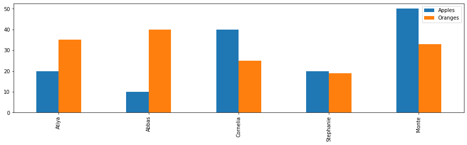
ax = df.plot.kde(figsize=(16,4))
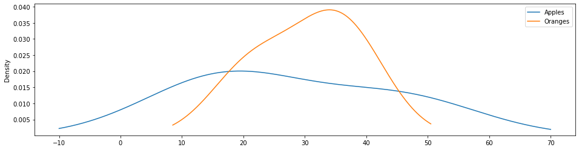
fig, (ax1, ax2, ax3) = plt.subplots(1, 3, figsize=(16,4))
fig.suptitle('Two Variable Plots', size=20, y=1.02)
df.plot.line(ax=ax1, title='Line plot')
df.plot.scatter(x='Apples', y='Oranges',
ax=ax2, title='Scatterplot')
df.plot.bar(ax=ax3, title='Bar plot')
<matplotlib.axes._subplots.AxesSubplot at 0x1b636a13a30>
fig, (ax1, ax2, ax3) = plt.subplots(1, 3, figsize=(16,4))
fig.suptitle('One Variable Plots', size=20, y=1.02)
df.plot.kde(ax=ax1, title='KDE plot')
df.plot.box(ax=ax2, title='Boxplot')
df.plot.hist(ax=ax3, title='Histogram')
<matplotlib.axes._subplots.AxesSubplot at 0x1b636b6fdf0>
fig, (ax1, ax2, ax3) = plt.subplots(1, 3, figsize=(16,4))
df.sort_values('Apples').plot.line(x='Apples', y='Oranges', ax=ax1)
df.plot.bar(x='Apples', y='Oranges', ax=ax2)
df.plot.kde(x='Apples', ax=ax3)
<matplotlib.axes._subplots.AxesSubplot at 0x1b636bfc7f0>
12.5 視覺化航班資料集¶
flights = pd.read_csv('data/flights.csv')
cols = ['DIVERTED', 'CANCELLED', 'DELAYED']
(flights
.assign(DELAYED=flights['ARR_DELAY'].ge(15).astype(int),
ON_TIME=lambda df_:1 - df_[cols].any(axis=1))
.select_dtypes(int)
.sum()
)
DELAYED 11685
ON_TIME 45789
dtype: int64
fig, ax_array = plt.subplots(2, 3, figsize=(18,8))
(ax1, ax2, ax3), (ax4, ax5, ax6) = ax_array
fig.suptitle('2015 US Flights - Univariate Summary', size=20)
ac = flights['AIRLINE'].value_counts()
ac.plot.barh(ax=ax1, title='Airline')
(flights
['ORG_AIR']
.value_counts()
.plot.bar(ax=ax2, rot=0, title='Origin City')
)
(flights
['DEST_AIR']
.value_counts()
.head(10)
.plot.bar(ax=ax3, rot=0, title='Destination City')
)
(flights
.assign(DELAYED=flights['ARR_DELAY'].ge(15).astype(int),
ON_TIME=lambda df_:1 - df_[cols].any(axis=1))
[['DIVERTED', 'CANCELLED', 'DELAYED', 'ON_TIME']]
.sum()
.plot.bar(ax=ax4, rot=0,
log=True, title='Flight Status')
)
flights['DIST'].plot.kde(ax=ax5, xlim=(0, 3000), title='Distance KDE')
flights['ARR_DELAY'].plot.hist(ax=ax6, title='Arrival Delay', range=(0,200)
)
<matplotlib.axes._subplots.AxesSubplot at 0x1b6367e08b0>
df_date = (flights
[['MONTH', 'DAY']]
.assign(YEAR=2015,
HOUR=flights['SCHED_DEP'] // 100,
MINUTE=flights['SCHED_DEP'] % 100)
)
df_date
| MONTH | DAY | YEAR | HOUR | MINUTE | |
|---|---|---|---|---|---|
| 0 | 1 | 1 | 2015 | 16 | 25 |
| 1 | 1 | 1 | 2015 | 8 | 23 |
| 2 | 1 | 1 | 2015 | 13 | 5 |
| 3 | 1 | 1 | 2015 | 15 | 55 |
| 4 | 1 | 1 | 2015 | 17 | 20 |
| ... | ... | ... | ... | ... | ... |
| 58487 | 12 | 31 | 2015 | 5 | 15 |
| 58488 | 12 | 31 | 2015 | 19 | 10 |
| 58489 | 12 | 31 | 2015 | 18 | 46 |
| 58490 | 12 | 31 | 2015 | 5 | 25 |
| 58491 | 12 | 31 | 2015 | 8 | 59 |
58492 rows × 5 columns
flight_dep = pd.to_datetime(df_date)
flight_dep
0 2015-01-0...
1 2015-01-0...
2 2015-01-0...
3 2015-01-0...
4 2015-01-0...
...
58487 2015-12-3...
58488 2015-12-3...
58489 2015-12-3...
58490 2015-12-3...
58491 2015-12-3...
Length: 58492, dtype: datetime64[ns]
flights.index = flight_dep
fc = flights.resample('W').size()
fc.plot.line(figsize=(12,6), title='Flights per Week', grid=True)
<matplotlib.axes._subplots.AxesSubplot at 0x1b639504460>
def interp_lt_n(df_, n=600):
return (df_
.where(df_ > n)
.interpolate(limit_direction='both')
)
fig, ax = plt.subplots(figsize=(16,4))
data = (flights
.resample('W')
.size()
)
(data
.pipe(interp_lt_n)
.iloc[1:-1]
.plot.line(ax=ax)
)
mask = data<600
(data
.pipe(interp_lt_n)[mask]
.plot.line(color='.8', linewidth=10)
)
ax.annotate(xy=(.8, .55), xytext=(.8, .77),
xycoords='axes fraction', s='missing data',
ha='center', size=20, arrowprops=dict())
ax.set_title('Flights per Week (Interpolated Missing Data)')
Text(0.5, 1.0, 'Flights per Week (Interpolated Missing Data)')
fig, ax = plt.subplots(figsize=(16,4))
(flights
.groupby('DEST_AIR')
['DIST']
.agg(['mean', 'count'])
.query('count > 100')
.sort_values('mean')
.tail(10)
.plot.bar(y='mean', rot=0, legend=False, ax=ax,
title='Average Distance per Destination')
)
<matplotlib.axes._subplots.AxesSubplot at 0x1b639cb2e50>
fig, ax = plt.subplots(figsize=(8,6))
(flights
.reset_index(drop=True)
[['DIST', 'AIR_TIME']]
.query('DIST <= 2000')
.dropna()
.plot.scatter(x='DIST', y='AIR_TIME', ax=ax, alpha=.1, s=1)
)
<matplotlib.axes._subplots.AxesSubplot at 0x1b639d2cf10>
flights[['DIST', 'AIR_TIME']].corr()
| DIST | AIR_TIME | |
|---|---|---|
| DIST | 1.00000 | 0.98774 |
| AIR_TIME | 0.98774 | 1.00000 |
(flights
.reset_index(drop=True)
[['DIST', 'AIR_TIME']]
.query('DIST <= 2000')
.dropna()
.pipe(lambda df_:pd.cut(df_.DIST,
bins=range(0, 2001, 250)))
.value_counts()
.sort_index()
)
(0, 250] 6529
(250, 500] 12631
(500, 750] 11506
(750, 1000] 8832
(1000, 1250] 5071
(1250, 1500] 3198
(1500, 1750] 3885
(1750, 2000] 1815
Name: DIST, dtype: int64
zscore = lambda x: (x - x.mean()) / x.std()
short = (flights
[['DIST', 'AIR_TIME']]
.query('DIST <= 2000')
.dropna()
.reset_index(drop=True)
.assign(BIN=lambda df_:pd.cut(df_.DIST, bins=range(0, 2001, 250)))
)
scores = (short
.groupby('BIN')
['AIR_TIME']
.transform(zscore)
)
(short.assign(SCORE=scores))
| DIST | AIR_TIME | BIN | SCORE | |
|---|---|---|---|---|
| 0 | 590 | 94.0 | (500, 750] | 0.490966 |
| 1 | 1452 | 154.0 | (1250, 1... | -1.267551 |
| 2 | 641 | 85.0 | (500, 750] | -0.296749 |
| 3 | 1192 | 126.0 | (1000, 1... | -1.211020 |
| 4 | 1363 | 166.0 | (1250, 1... | -0.521999 |
| ... | ... | ... | ... | ... |
| 53462 | 1464 | 166.0 | (1250, 1... | -0.521999 |
| 53463 | 414 | 71.0 | (250, 500] | 1.376879 |
| 53464 | 262 | 46.0 | (250, 500] | -1.255719 |
| 53465 | 907 | 124.0 | (750, 1000] | 0.495005 |
| 53466 | 522 | 73.0 | (500, 750] | -1.347036 |
53467 rows × 4 columns
fig, ax = plt.subplots(figsize=(10,6))
(short.assign(SCORE=scores)
.pivot(columns='BIN')
['SCORE']
.plot.box(ax=ax)
)
ax.set_title('Z-Scores for Distance Groups')
C:\Users\Admin\anaconda3\lib\site-packages\numpy\core\_asarray.py:83: VisibleDeprecationWarning: Creating an ndarray from ragged nested sequences (which is a list-or-tuple of lists-or-tuples-or ndarrays with different lengths or shapes) is deprecated. If you meant to do this, you must specify 'dtype=object' when creating the ndarray
return array(a, dtype, copy=False, order=order)
Text(0.5, 1.0, 'Z-Scores for Distance Groups')
mask = (short
.assign(SCORE=scores)
.pipe(lambda df_:df_.SCORE.abs() >6)
)
outliers = (flights
[['DIST', 'AIR_TIME']]
.query('DIST <= 2000')
.dropna()
.reset_index(drop=True)
[mask]
.assign(PLOT_NUM=lambda df_:range(1, len(df_)+1))
)
outliers
| DIST | AIR_TIME | PLOT_NUM | |
|---|---|---|---|
| 14972 | 373 | 121.0 | 1 |
| 22507 | 907 | 199.0 | 2 |
| 40768 | 643 | 176.0 | 3 |
| 50141 | 651 | 164.0 | 4 |
| 52699 | 802 | 210.0 | 5 |
fig, ax = plt.subplots(figsize=(8,6))
(short
.assign(SCORE=scores)
.plot.scatter(x='DIST', y='AIR_TIME',
alpha=.1, s=1, ax=ax,
table=outliers)
)
outliers.plot.scatter(x='DIST', y='AIR_TIME', s=25, ax=ax, grid=True)
outs = outliers[['AIR_TIME', 'DIST', 'PLOT_NUM']]
for t, d, n in outs.itertuples(index=False):
ax.text(d + 5, t + 5, str(n))
plt.setp(ax.get_xticklabels(), y=.1)
plt.setp(ax.get_xticklines(), visible=False)
ax.set_xlabel('')
ax.set_title('Flight Time vs Distance with Outliers')
Text(0.5, 1.0, 'Flight Time vs Distance with Outliers')
12.6 使用堆疊面積圖找出趨勢¶
meetup = pd.read_csv('data/meetup_groups.csv',
parse_dates=['join_date'],
index_col='join_date')
meetup
| group | city | state | country | |
|---|---|---|---|---|
| join_date | ||||
| 2016-11-18 | houston ... | Houston | TX | us |
| 2017-05-09 | houston ... | Houston | TX | us |
| 2016-12-30 | houston ... | Houston | TX | us |
| 2016-07-18 | houston ... | Houston | TX | us |
| 2017-05-25 | houston ... | Houston | TX | us |
| ... | ... | ... | ... | ... |
| 2017-10-07 | houston ... | Houston | TX | us |
| 2017-06-24 | houston ... | Houston | TX | us |
| 2015-10-05 | houston ... | Houston | TX | us |
| 2016-11-04 | houston ... | Houston | TX | us |
| 2016-08-02 | houston ... | Houston | TX | us |
7671 rows × 4 columns
(meetup.groupby([pd.Grouper(freq='W'), 'group'])
.size())
join_date group
2010-11-07 houstonr 5
2010-11-14 houstonr 11
2010-11-21 houstonr 2
2010-12-05 houstonr 1
2011-01-16 houstonr 2
..
2017-10-15 houston data science 14
houston data visualization 13
houston energy data science 9
houston machine learning 11
houstonr 2
Length: 763, dtype: int64
(meetup
.groupby([pd.Grouper(freq='W'), 'group'])
.size()
.unstack('group', fill_value=0)
)
| group | houston data science | houston data visualization | houston energy data science | houston machine learning | houstonr |
|---|---|---|---|---|---|
| join_date | |||||
| 2010-11-07 | 0 | 0 | 0 | 0 | 5 |
| 2010-11-14 | 0 | 0 | 0 | 0 | 11 |
| 2010-11-21 | 0 | 0 | 0 | 0 | 2 |
| 2010-12-05 | 0 | 0 | 0 | 0 | 1 |
| 2011-01-16 | 0 | 0 | 0 | 0 | 2 |
| ... | ... | ... | ... | ... | ... |
| 2017-09-17 | 16 | 2 | 6 | 5 | 0 |
| 2017-09-24 | 19 | 4 | 16 | 12 | 7 |
| 2017-10-01 | 20 | 6 | 6 | 20 | 1 |
| 2017-10-08 | 22 | 10 | 10 | 4 | 2 |
| 2017-10-15 | 14 | 13 | 9 | 11 | 2 |
278 rows × 5 columns
(meetup
.groupby([pd.Grouper(freq='W'), 'group'])
.size()
.unstack('group', fill_value=0)
.cumsum()
)
| group | houston data science | houston data visualization | houston energy data science | houston machine learning | houstonr |
|---|---|---|---|---|---|
| join_date | |||||
| 2010-11-07 | 0 | 0 | 0 | 0 | 5 |
| 2010-11-14 | 0 | 0 | 0 | 0 | 16 |
| 2010-11-21 | 0 | 0 | 0 | 0 | 18 |
| 2010-12-05 | 0 | 0 | 0 | 0 | 19 |
| 2011-01-16 | 0 | 0 | 0 | 0 | 21 |
| ... | ... | ... | ... | ... | ... |
| 2017-09-17 | 2105 | 1708 | 1886 | 708 | 1056 |
| 2017-09-24 | 2124 | 1712 | 1902 | 720 | 1063 |
| 2017-10-01 | 2144 | 1718 | 1908 | 740 | 1064 |
| 2017-10-08 | 2166 | 1728 | 1918 | 744 | 1066 |
| 2017-10-15 | 2180 | 1741 | 1927 | 755 | 1068 |
278 rows × 5 columns
(meetup
.groupby([pd.Grouper(freq='W'), 'group'])
.size()
.unstack('group', fill_value=0)
.cumsum()
.pipe(lambda df_: df_.div(
df_.sum(axis='columns'), axis='index'))
)
| group | houston data science | houston data visualization | houston energy data science | houston machine learning | houstonr |
|---|---|---|---|---|---|
| join_date | |||||
| 2010-11-07 | 0.000000 | 0.000000 | 0.000000 | 0.000000 | 1.000000 |
| 2010-11-14 | 0.000000 | 0.000000 | 0.000000 | 0.000000 | 1.000000 |
| 2010-11-21 | 0.000000 | 0.000000 | 0.000000 | 0.000000 | 1.000000 |
| 2010-12-05 | 0.000000 | 0.000000 | 0.000000 | 0.000000 | 1.000000 |
| 2011-01-16 | 0.000000 | 0.000000 | 0.000000 | 0.000000 | 1.000000 |
| ... | ... | ... | ... | ... | ... |
| 2017-09-17 | 0.282058 | 0.228862 | 0.252713 | 0.094868 | 0.141498 |
| 2017-09-24 | 0.282409 | 0.227629 | 0.252892 | 0.095732 | 0.141338 |
| 2017-10-01 | 0.283074 | 0.226829 | 0.251914 | 0.097703 | 0.140481 |
| 2017-10-08 | 0.284177 | 0.226712 | 0.251640 | 0.097612 | 0.139858 |
| 2017-10-15 | 0.284187 | 0.226959 | 0.251206 | 0.098423 | 0.139226 |
278 rows × 5 columns
fig, ax = plt.subplots(figsize=(18,6))
(meetup
.groupby([pd.Grouper(freq='W'), 'group'])
.size()
.unstack('group', fill_value=0)
.cumsum()
.pipe(lambda df_: df_.div(
df_.sum(axis='columns'), axis='index'))
.plot.area(ax=ax,
cmap='Greys', xlim=('2013-6', None),
ylim=(0, 1), legend=False)
)
ax.figure.suptitle('Houston Meetup Groups', size=25)
ax.set_xlabel('')
ax.yaxis.tick_right()
kwargs = {'xycoords':'axes fraction', 'size':15}
ax.annotate(xy=(.1, .7), s='R Users', color='w', **kwargs)
ax.annotate(xy=(.25, .16), s='Data Visualization', color='k', **kwargs)
ax.annotate(xy=(.5, .55), s='Energy Data Science', color='k', **kwargs)
ax.annotate(xy=(.83, .07), s='Data Science', color='k', **kwargs)
ax.annotate(xy=(.86, .78), s='Machine Learning', color='w', **kwargs)
Text(0.86, 0.78, 'Machine Learning')
12.7 了解Seaborn和Pandas之間的區別¶
employee = pd.read_csv('data/employee.csv',
parse_dates=['HIRE_DATE', 'JOB_DATE'])
employee
| UNIQUE_ID | POSITION_TITLE | DEPARTMENT | ... | EMPLOYMENT_STATUS | HIRE_DATE | JOB_DATE | |
|---|---|---|---|---|---|---|---|
| 0 | 0 | ASSISTAN... | Municipa... | ... | Active | 2006-06-12 | 2012-10-13 |
| 1 | 1 | LIBRARY ... | Library | ... | Active | 2000-07-19 | 2010-09-18 |
| 2 | 2 | POLICE O... | Houston ... | ... | Active | 2015-02-03 | 2015-02-03 |
| 3 | 3 | ENGINEER... | Houston ... | ... | Active | 1982-02-08 | 1991-05-25 |
| 4 | 4 | ELECTRICIAN | General ... | ... | Active | 1989-06-19 | 1994-10-22 |
| ... | ... | ... | ... | ... | ... | ... | ... |
| 1995 | 1995 | POLICE O... | Houston ... | ... | Active | 2014-06-09 | 2015-06-09 |
| 1996 | 1996 | COMMUNIC... | Houston ... | ... | Active | 2003-09-02 | 2013-10-06 |
| 1997 | 1997 | POLICE O... | Houston ... | ... | Active | 2014-10-13 | 2015-10-13 |
| 1998 | 1998 | POLICE O... | Houston ... | ... | Active | 2009-01-20 | 2011-07-02 |
| 1999 | 1999 | FIRE FIG... | Houston ... | ... | Active | 2009-01-12 | 2010-07-12 |
2000 rows × 10 columns
import seaborn as sns
fig, ax = plt.subplots(figsize=(8, 6))
sns.countplot(y='DEPARTMENT', data=employee, ax=ax)
<matplotlib.axes._subplots.AxesSubplot at 0x1b639a25880>
fig, ax = plt.subplots(figsize=(8, 6))
(employee
['DEPARTMENT']
.value_counts()
.plot.barh(ax=ax)
)
<matplotlib.axes._subplots.AxesSubplot at 0x1b63a136190>
fig, ax = plt.subplots(figsize=(8, 6))
sns.barplot(y='RACE', x='BASE_SALARY', data=employee, ax=ax)
<matplotlib.axes._subplots.AxesSubplot at 0x1b63ba8b130>
fig, ax = plt.subplots(figsize=(8, 6))
(employee
.groupby('RACE', sort=False)
['BASE_SALARY']
.mean()
.plot.barh(rot=0, width=.8, ax=ax)
)
ax.set_xlabel('Mean Salary')
Text(0.5, 0, 'Mean Salary')
fig, ax = plt.subplots(figsize=(18, 6))
sns.barplot(x='RACE', y='BASE_SALARY', hue='GENDER',
ax=ax, data=employee,
order=['Hispanic/Latino',
'Black or African American',
'American Indian or Alaskan Native',
'Asian/Pacific Islander', 'Others',
'White'])
<matplotlib.axes._subplots.AxesSubplot at 0x1b63bda41f0>
fig, ax = plt.subplots(figsize=(18, 6))
(employee
.groupby(['RACE', 'GENDER'], sort=False)
['BASE_SALARY']
.mean()
.unstack('GENDER')
.sort_values('Female')
.plot.bar(rot=0, ax=ax, width=.8, cmap='viridis')
)
<matplotlib.axes._subplots.AxesSubplot at 0x1b63ce22520>
fig, ax = plt.subplots(figsize=(8, 6))
sns.boxplot(x='GENDER', y='BASE_SALARY', data=employee,
hue='RACE', ax=ax)
<matplotlib.axes._subplots.AxesSubplot at 0x1b63ce57ee0>
fig, axs = plt.subplots(1, 2, figsize=(12, 6), sharey=True)
for g, ax in zip(['Female', 'Male'], axs):
(employee
.query('GENDER == @g')
.assign(RACE=lambda df_:df_.RACE.fillna('NA'))
.pivot(columns='RACE')
['BASE_SALARY']
.plot.box(ax=ax, rot=30)
)
ax.set_title(g + ' Salary')
ax.set_xlabel('')
C:\Users\Admin\anaconda3\lib\site-packages\numpy\core\_asarray.py:83: VisibleDeprecationWarning: Creating an ndarray from ragged nested sequences (which is a list-or-tuple of lists-or-tuples-or ndarrays with different lengths or shapes) is deprecated. If you meant to do this, you must specify 'dtype=object' when creating the ndarray
return array(a, dtype, copy=False, order=order)
C:\Users\Admin\anaconda3\lib\site-packages\numpy\core\_asarray.py:83: VisibleDeprecationWarning: Creating an ndarray from ragged nested sequences (which is a list-or-tuple of lists-or-tuples-or ndarrays with different lengths or shapes) is deprecated. If you meant to do this, you must specify 'dtype=object' when creating the ndarray
return array(a, dtype, copy=False, order=order)
12.8 使用Seaborn進行多變量分析¶
emp = pd.read_csv('data/employee.csv',
parse_dates=['HIRE_DATE', 'JOB_DATE'])
def yrs_exp(df_):
days_hired = pd.to_datetime('12-1-2016') - df_.HIRE_DATE
return days_hired.dt.days / 365.25
emp = emp.assign(YEARS_EXPERIENCE=yrs_exp)
emp[['HIRE_DATE', 'YEARS_EXPERIENCE']]
| HIRE_DATE | YEARS_EXPERIENCE | |
|---|---|---|
| 0 | 2006-06-12 | 10.472279 |
| 1 | 2000-07-19 | 16.369610 |
| 2 | 2015-02-03 | 1.826146 |
| 3 | 1982-02-08 | 34.811773 |
| 4 | 1989-06-19 | 27.452430 |
| ... | ... | ... |
| 1995 | 2014-06-09 | 2.480493 |
| 1996 | 2003-09-02 | 13.248460 |
| 1997 | 2014-10-13 | 2.135524 |
| 1998 | 2009-01-20 | 7.863107 |
| 1999 | 2009-01-12 | 7.885010 |
2000 rows × 2 columns
fig, ax = plt.subplots(figsize=(8, 6))
sns.regplot(x='YEARS_EXPERIENCE', y='BASE_SALARY', data=emp, ax=ax)
<matplotlib.axes._subplots.AxesSubplot at 0x1b63d2f0430>
grid = sns.lmplot(x='YEARS_EXPERIENCE', y='BASE_SALARY',
hue='GENDER',
scatter_kws={'s':10}, data=emp)
grid.fig.set_size_inches(8, 6)
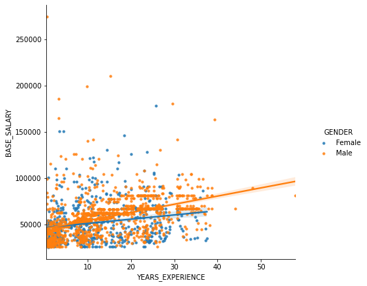
grid = sns.lmplot(x='YEARS_EXPERIENCE', y='BASE_SALARY',
hue='GENDER', col='RACE', col_wrap=3,
sharex=False,
line_kws = {'linewidth':5},
data=emp)
grid.set(ylim=(20000, 120000))
<seaborn.axisgrid.FacetGrid at 0x1b63d5c9580>
deps = emp['DEPARTMENT'].value_counts().index[:2]
deps
Index(['Houston Police Department-HPD', 'Houston Fire Department (HFD)'], dtype='object')
races = emp['RACE'].value_counts().index[:3]
races
Index(['Black or African American', 'White', 'Hispanic/Latino'], dtype='object')
is_dep = emp['DEPARTMENT'].isin(deps)
is_race = emp['RACE'].isin(races)
emp2 = (emp
[is_dep & is_race]
.assign(DEPARTMENT=lambda df_:
df_['DEPARTMENT'].str.extract('(HPD|HFD)', expand=True))
)
emp2.shape
(968, 11)
emp2['DEPARTMENT'].value_counts()
HPD 591
HFD 377
Name: DEPARTMENT, dtype: int64
emp2['RACE'].value_counts()
White 478
Hispanic/Latino 250
Black or African American 240
Name: RACE, dtype: int64
common_depts = (emp.groupby('DEPARTMENT')
.filter(lambda group: len(group) > 50))
fig, ax = plt.subplots(figsize=(8, 6))
sns.violinplot(x='YEARS_EXPERIENCE', y='GENDER', data=common_depts)
<matplotlib.axes._subplots.AxesSubplot at 0x1b63dc4c850>
grid = sns.catplot(x='YEARS_EXPERIENCE', y='GENDER',
col='RACE', row='DEPARTMENT',
height=3, aspect=2,
data=emp2, kind='violin')
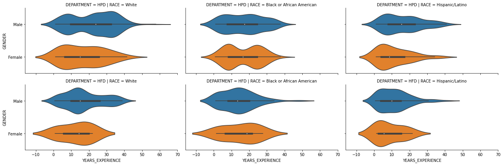